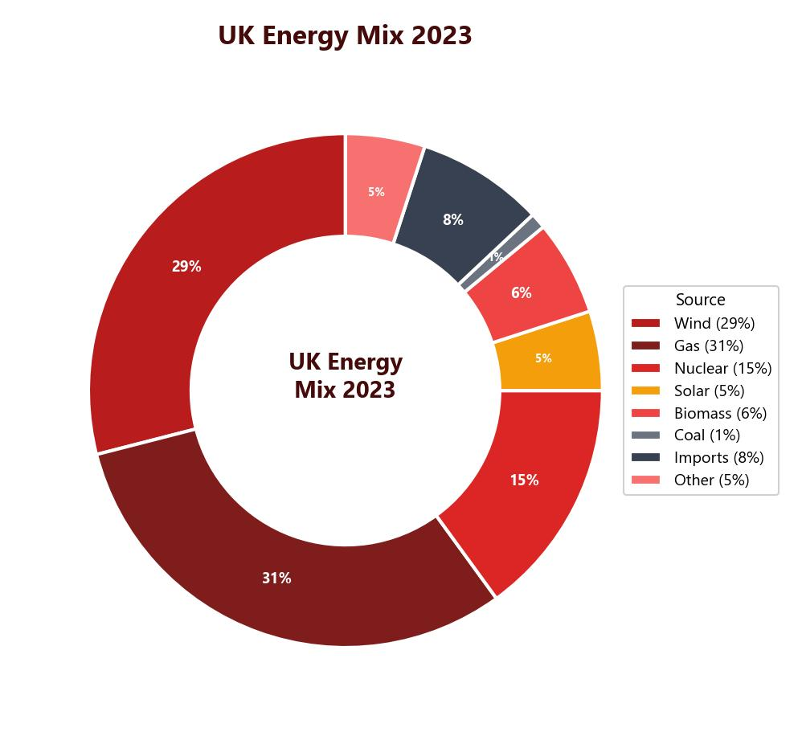

Strategies to Increase Future Energy Supply
As fossil fuels become scarcer and their environmental impact worsens, the world must find ways to secure energy for the future. Currently, non-renewable sources (oil, gas, coal and nuclear) account for around 87% of global energy production. The remaining 13% comes from renewable sources. This balance must shift significantly if we are to avoid the worst effects of climate change and energy insecurity.
The UK’s energy mix has changed dramatically over recent decades. Coal and oil use have declined sharply, replaced by gas and a growing share of renewables. However, gas is also finite and the UK imports most of its gas supply, making energy security vulnerable. The long-term solution requires a major shift to renewable energy.

Types of Renewable Energy
Renewable energy sources include wind, solar, tidal, wave, geothermal, hydro-electric power (HEP) and biomass. These sources do not run out and produce little or no carbon emissions during generation. However, many are weather-dependent (solar needs sun, wind needs wind) and cannot provide a constant base load of energy the way fossil fuels or nuclear can.
Reducing Energy Use
In the Home
Simple changes to homes can significantly reduce energy consumption:
- Loft insulation — stops heat escaping through the roof, so less gas or electricity is needed for heating.
- Double glazing — prevents draughts and reduces heat loss through windows, cutting heating costs.
- Energy-saving light bulbs — use far less electricity than traditional bulbs, reducing the amount of electricity that needs to be generated.
If every household reduced its energy use, the country would need to import less energy from abroad, directly improving energy security.
In Transport
Transport is a major energy consumer. Projects like HS2 aim to use renewable electricity to power high-speed rail, reducing the need for domestic flights that burn fossil fuels. Electric vehicles are becoming more common, and people who use electrically powered transport significantly reduce their carbon footprint because fossil fuels are not being burned.
In the Workplace
Schools and offices can save energy through biomass boilers (burning wood chips instead of gas), automatic lighting (which turns off when no motion is detected), automatic ventilation (reducing the need for heating and cooling), and rainwater collection for toilet flushing. Recycling also saves energy because manufacturing new products uses more energy than reprocessing existing materials.
Case Study: Micro-Hydro in Nepal
Nepal is a landlocked country in South Asia, bordered by India and China. It is classified as an LIC and faces severe energy challenges. Nepal has no fossil fuel reserves of its own, cannot afford to import large quantities of fuel, and its mountainous terrain makes transporting energy extremely difficult. The country does not have a national electricity grid, so many rural communities have no access to power at all.
Most of Nepal’s energy traditionally comes from burning wood as fuel. This causes deforestation, reduces biodiversity, increases flood risk and creates indoor air pollution that damages health.
What Is Micro-Hydro?
Micro-hydro is a small-scale method of generating electricity from flowing water. Nepal is rich in water resources due to its mountainous landscape and rivers fed by Himalayan snowmelt. A micro-hydro plant works by channelling water from a high point to a low point through pipes. As the water flows downhill, it turns a turbine, which generates electricity. The electricity is then distributed to nearby homes and businesses.
Nepal’s water resources have the potential to produce enough electricity for its entire population of 27 million people. Micro-hydro plants are preferred over large-scale HEP dams because they are cheaper, quicker to build, cause less environmental damage, and directly benefit local communities rather than distant cities.
Why Micro-Hydro, Not Large-Scale HEP?
Large-scale hydroelectric dams are very expensive, take years to build, damage the landscape and often do not benefit the rural villages that need electricity most. Micro-hydro plants are a better alternative because they are:
- Cheaper — much lower construction and maintenance costs.
- Faster to build — communities can construct them relatively quickly.
- Less environmentally damaging — they use small amounts of water and do not require flooding valleys.
- Directly beneficial — electricity goes straight to the local village, not to a distant city.
The UNDP and Community Involvement
The UNDP (United Nations Development Programme) has helped build 400 micro-hydro plants in Nepal, providing electricity to approximately 500,000 people. Crucially, the UNDP does not simply build the plants and leave. Local communities are trained to construct, maintain and operate the micro-hydro systems themselves. They can then train others, share skills with the next generation, and build additional plants independently.
How Has Micro-Hydro Changed Communities?
Access to electricity has transformed rural Nepalese villages:
- In the village of Karbang, new businesses have opened since electricity arrived. A local noodle factory tripled its production, created new products and now has the potential to export goods.
- Families can send children to school because they no longer need them to collect firewood all day.
- Communities have invested in medical equipment and refrigerated storage for vaccines, dramatically improving healthcare.
- Overall quality of life has improved as homes now have lighting, cooking facilities and access to communication technology.
Nepal is also exploring other renewable energy sources including solar panels, wind turbines, biogas digesters (which convert animal waste into fuel) and solar cookers (which reduce the need for firewood for cooking). These sustainable solutions help Nepal reduce its dependence on wood fuel and build energy security without the environmental damage caused by fossil fuels.